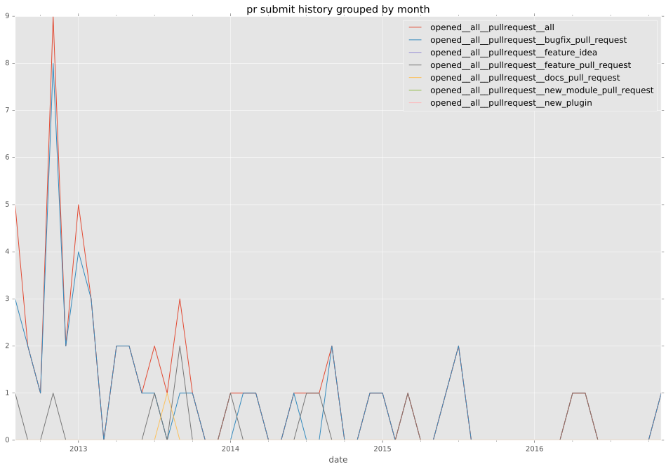
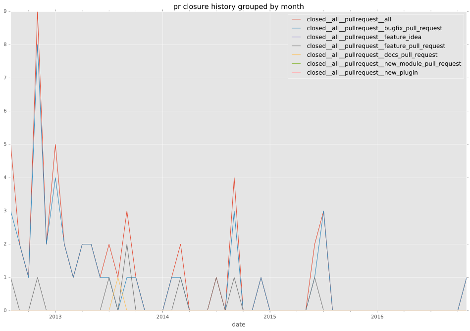
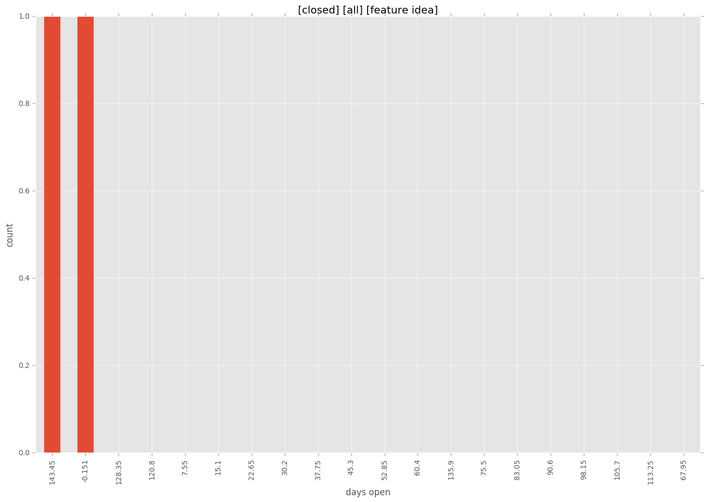

total issue counts
unknown: 2
feature pull request: 11
docs report: 1
pullrequest: 56
docs pull request: 1
bugfix pull request: 42
feature idea: 4
issue: 15
bug report: 10
issue history
pullrequest history


days open by issue type
bugfix pull request
count: 62
std: 32.549133019
min: 0
max: 173
median: 0.0
mean: 9.11290322581
all
count: 93
std: 62.887053039
min: 0
max: 457
median: 0.0
mean: 22.1827956989
pullrequest
count: 0
std: nan
min: nan
max: nan
median: nan
mean: nan
docs pull request
count: 2
std: 0.0
min: 0
max: 0
median: 0.0
mean: 0.0
docs report
count: 1
std: nan
min: 60
max: 60
median: 60.0
mean: 60.0
feature pull request
count: 14
std: 43.4829763329
min: 0
max: 108
median: 2.0
mean: 32.0
feature idea
count: 2
std: 106.773123959
min: 0
max: 151
median: 75.5
mean: 75.5
issue
count: 0
std: nan
min: nan
max: nan
median: nan
mean: nan
bug report
count: 9
std: 156.717456306
min: 0
max: 457
median: 19.0
mean: 93.1111111111
closures grouped by total days open
